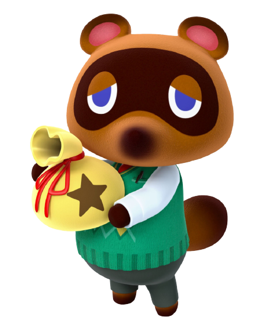

Occupation: Patron de de Nook Incorporated et agent immobilier

Éducation
École primaire d'Okane
École secondaire de Chiketto
Cégep de Tokyo: Spécialisation commerce
Université de Montréal: Baccalauréat en étude du capitalisme
Hec Paris: Maîtrise en économie
Expérience
Animal Crossing (2001-2005) : Propriétaire du magasin principal de la ville
Animal Crossing, Wild World (2005-2008) : Propriétaire du magasin principal de la ville
Animal Crossing, City Folk (2008-2013) : Propriétaire du magasin principal de la ville
Animal Crossing, New Leaf (2013-2017) : Ouverture de Nook's Homes et Agent immobilier
Animal Crossing, Happy Homme Designer (2015) : Propriétaire du Nook's Homes et Agent immobilier
Animal Crossing, Amiibo Festival (2015) : Représentant d'Animal Crossing
Animal Crossing, Pocket Camp (2017-2020) : Responsable de la création du projet Pocket Camp et de sa réussite
Animal Crossing, New Horizons (2020-En cours) : Chef de Nook Incorporated, en charge des îles, des tâches et d'améliorer les îles
Divers
Bénévolat :
Super Smash Bros. Melee : Tom Nook est représenté comme Trophée
Super Smash Bros. Brawl : Il est représenté comme Trophée et sur une vignette
Super Smash Bros. 4 : Tom Nook apparaît dans la publicité et il est représenté comme Trophée
Super Smash Bros. Ultimate : Il apparaît en tant qu'esprit.
Dōbutsu no Mori : Tom Nook a un rôle secondaire dans le film
Monopoly. Nintendo Collector's Edition : Il représentant d'Animal Crossing
Informations intéréssantes
90% des revenus de Tom Nook sont remis à un orphelinat
En 2003, pour les Annual Nintendo Power Awards Tom Nook a été nominé pour meilleur vilain dans un jeu Nintendo, pourtant il n'est pas un méchant dans Animal Crossing
Sa chanson préférée de K.K. Slider est K.K. Lament
Tom Nook aime son café avec beaucoup de lait et une cuillère de sucre